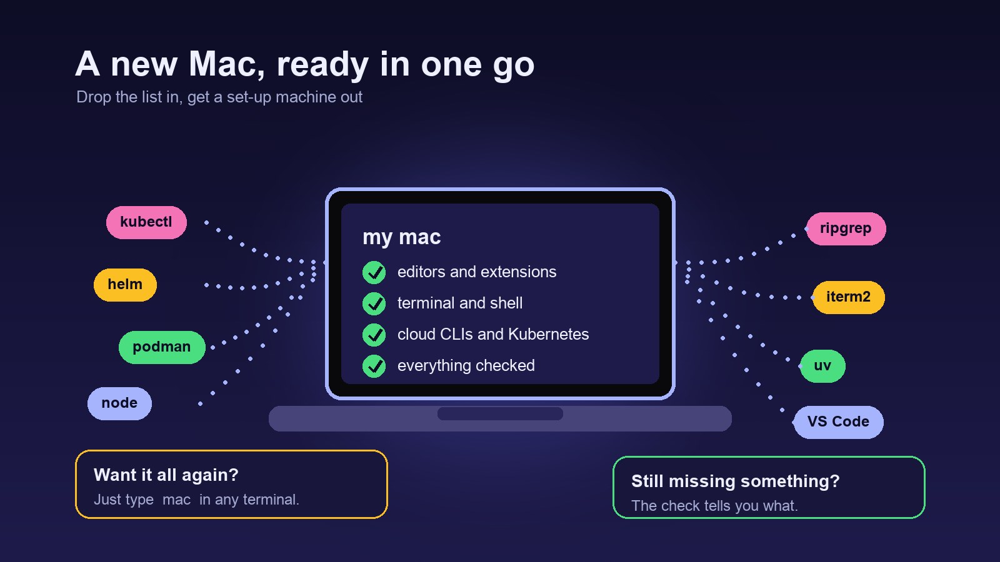

One Command for a New Mac
Every few years I set up a new Mac, and every time I lose an afternoon remembering what I had. So I wrote a repo that remembers for me.

The problem is simple to describe. A development machine accumulates tools: a CLI here, an editor extension there, a shell alias you added at midnight and never wrote down. When the laptop changes, those tools don't come with it, and you rebuild them from memory.
mac-setup is my answer. It is a repo that installs the tools I use daily, configures my shell and editors, and checks that everything is still there. The whole thing starts with one command:
git clone https://github.com/sachinfrayne/mac-setup.git ~/Source/mac-setup
cd ~/Source/mac-setup
./setup.shIt is safe to run more than once, which matters more than it sounds. The script checks what is already installed before it changes anything, so the same command works on a fresh machine and on the one I use every day.
After that first run, you never need to type the path again. The setup adds a mac command to your shell, so you can run the whole thing from any terminal:
macOne list, two jobs
The most useful decision in the repo is that the package list lives in exactly one file, lib/packages.sh. It has about 57 entries: Homebrew formulae like kubectl, helm, and ripgrep, and casks like Visual Studio Code, iTerm2, and Podman Desktop. Each entry has a short description, so the list doubles as documentation.
Two scripts read that file. setup.sh installs everything in it, and scripts/verify.sh checks that each item is present. Because both read the same list, they cannot drift apart. If I add a tool to the list, the next verify run notices it is missing from the machine. If I delete a tool from the list, verify stops asking about it.
This is the part I would copy into any team setup. Installation and verification usually live in two places, and the second one quietly goes stale. Sharing one source of truth removes that failure mode.
Commands you can read
The repo also gives me a few flags that I use more than I expected:
mac --dry-runshows what would be installed, without changing anything.mac --verifychecks the machine against the list.mac --upgradeupdates Homebrew packages and exits.mac --lintruns shellcheck on every shell script in the repo.
The shell side follows the same idea. My aliases and functions are defined in one file, and each one has a :desc line that explains what it does. That line is what makes the alias list readable later. When I forget what podman_clean does, the description says it removes all containers and prunes networks and volumes, after asking for confirmation.
Setup as a record
A repo like this also works as a diary. The commit history shows when I added Podman, when I dropped JetBrains and Gradle, and when I swapped the Excel viewer in VS Code. The history answers questions I used to answer from memory, like "why is this on my machine?"
It also covers the parts of my workflow that are not packages. The repo keeps my global Claude Code instructions and a status line that shows the current directory and git branch. Those files live with the rest of the setup, so a new machine gets the same working habits as the old one.
What I would do differently
The README still contains a placeholder clone URL, so anyone following it today would clone the wrong repository. The first thing I would fix is that link. I would also add a short note on the expected output of --verify, so a new reader knows what a healthy machine looks like.
The setup is for my machine, not a general tool. It assumes Homebrew, a specific set of editors, and my own folder layout. That is fine, because the value is in the pattern, not in the list.
Start with your own list
You do not need my packages. Start a repo with a list of what you use, one file that both installs and checks it, and a short note about the commands you run most. Put it under version control and write a line each time you change it. The next time you buy a laptop, the setup takes minutes instead of an afternoon.